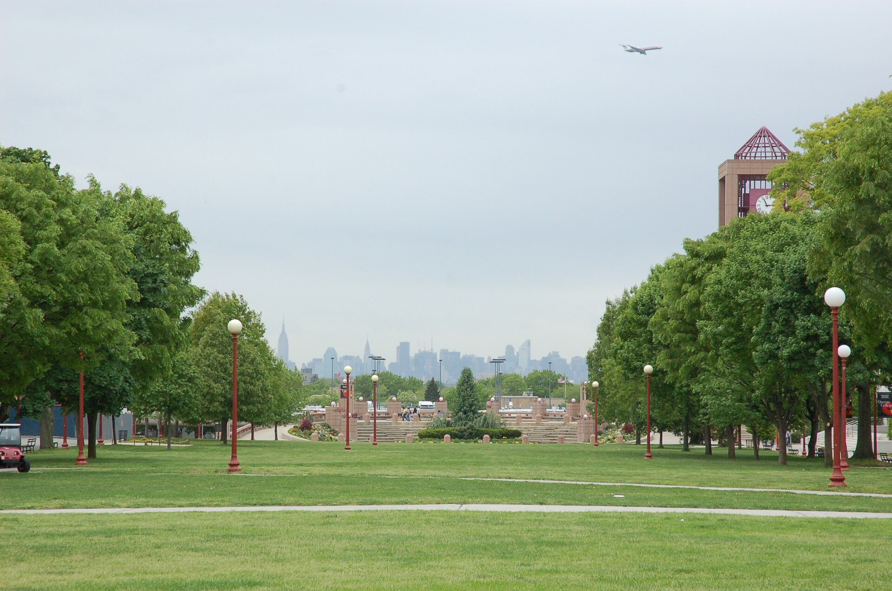

Start here: law school

This path collects the free pre-law programs, NYC internships, scholarships and LSAT logistics a QC political science major needs, whether you apply senior year or five years from now.
Three ground rules
- The best pre-law programs are free. The LSAC fee waiver, LSAC Plus and most pipeline programs cost nothing. Be skeptical of paid "pre-law institutes."
- Deadlines move every year. Confirm on the official page before you plan around a date.
- Taking time off is normal. Most law students did not go straight from college.